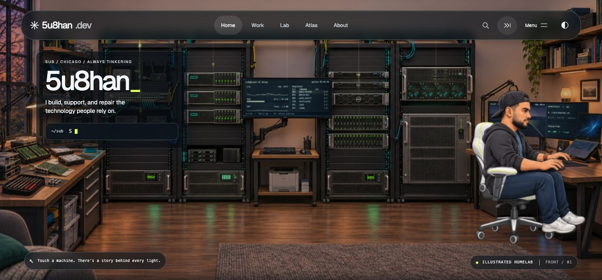
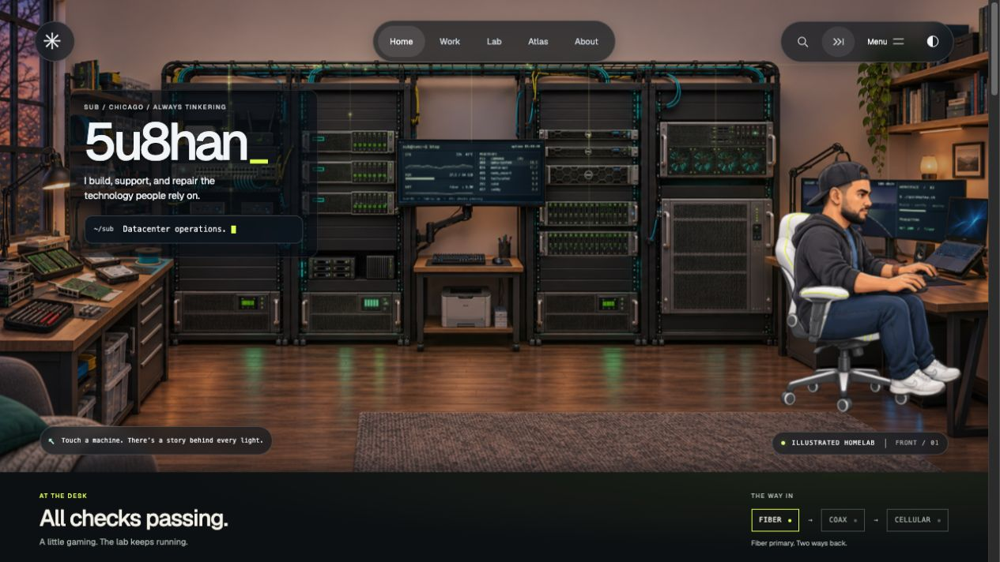
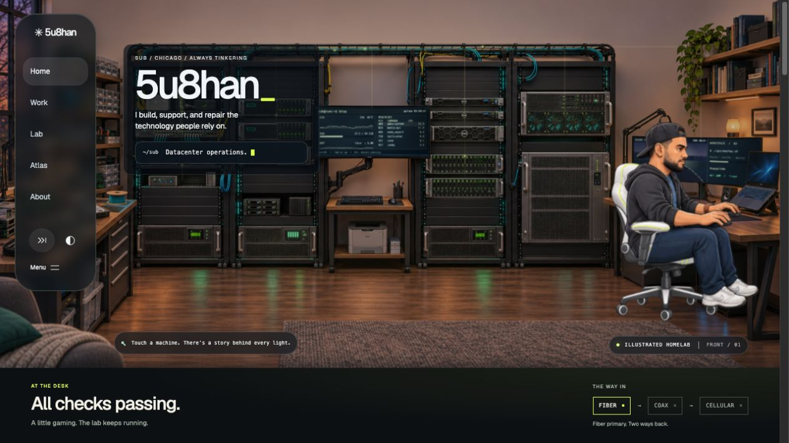
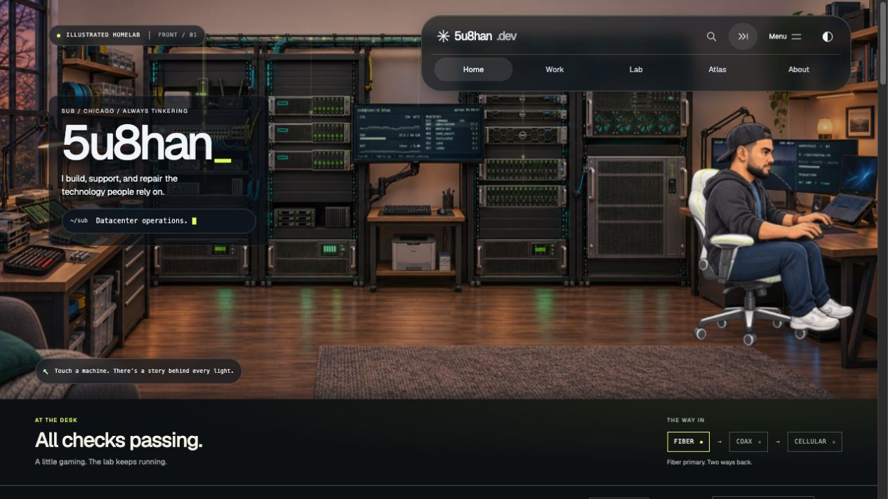

LIVE STUDY / 0101
Canopy
THE GLASS RIBBONA broad, floating navigation bar gives the room a clear upper edge. The identity sits underneath, with the lab stretching across the page.
Enter CanopyThe room now fills the landing field, with corrected monitor surfaces and quieter overlays. These earlier menu arrangements remain here for comparison while the next direction is chosen from the new references.
Open a study to explore the live room.

LIVE STUDY / 01A broad, floating navigation bar gives the room a clear upper edge. The identity sits underneath, with the lab stretching across the page.
Enter Canopy
LIVE STUDY / 02Navigation and utilities become separate glass islands. More of the wall stays open between them, giving the scene a lighter frame.
Enter Split Signal
LIVE STUDY / 03A slim side rail changes the rhythm. The interface occupies the edge while the name and mission move inward, leaving the room open above.
Enter Glass Spine
LIVE STUDY / 04A compact two-row navigator gathers the controls in the upper right. The room and identity get an open, asymmetric composition.
Enter Command DockWHAT TO LOOK FOR
Watch the room through the navigation, try its controls, and switch the atmosphere. Compare how much attention the interface asks for—and how much it gives back to the lab.